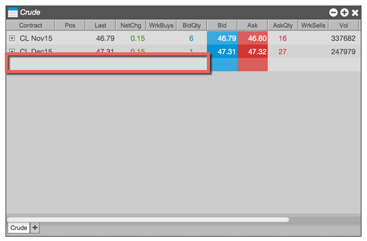
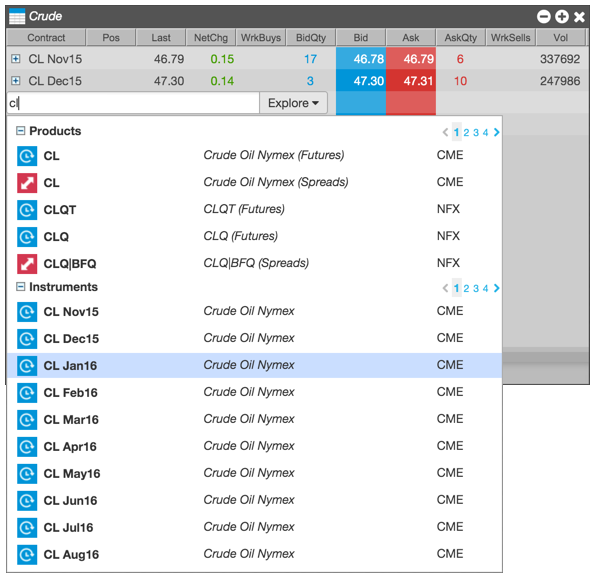
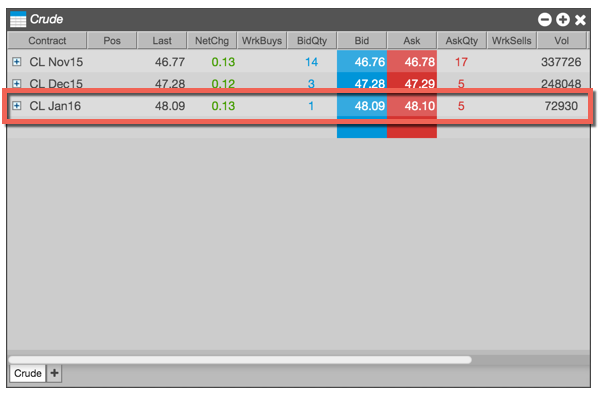

Adding instruments to Market Grid
To add instruments to an existing tab:
-
Double-click any row within an existing tab in a Market Grid.
Clicking on a row that is already populated will insert a new row above that instrument. Clicking on the blank row after the last instrument will add instruments to the bottom of the grid.

-
Use Search or Explore to add one or more instruments to the Market Grid. If you choose a product, all of the instruments available for the product are added to the Market Grid.

The selected instruments are added to the Market Grid.

Hiding inactive instruments
To enable Live Only mode and hide inactive instruments:
-
Make the desired tab active.

-
From the widget's context menu, select Enable Live Only.
The inactive instruments are hidden and the tab and widget titles are updated to indicate that Live Mode is enabled, as shown.

If a Market Grid contains multiple tabs, you must enable Live Only mode for each desired tab. For example, the following Market Grid includes one tab with only active instruments and one with all available instruments.

Displaying market depth
Market Grid shows the aggregate market depth data for all orders at the same price level. You can also display additional levels of depth for a contract. Note that not all exchanges provide market depth data.
-
Click the plus sign by a contract to display its market depth.

When market depth is opened in the Market Grid, five levels of depth are displayed by default. That default setting for Depth Increment can be changed in the Market Grid Settings.

-
Use the up and down arrows to display greater or fewer levels of market depth for a particular instrument.

Displaying detailed depth
To display detailed depth information for an instrument:
-
Click the plus sign by a contract to display its aggregated market depth.

-
Enable the Detail check box to show the detailed depth.

-
Use the up and down arrows to display greater or fewer levels of market depth.
Rolling an instrument
To roll an instrument forward to the next contract:
-
Select the row or rows for the desired instruments, and right-click on the selection.
-
From to context menu, select Roll instrument.
Note: If you want to go beyond the next prompt contract, simply select Roll instrument” again to roll the contract forward to the next consecutive contract.
Removing an instrument
To remove an instrument from Market Grid:
-
Select the row or rows for the desired instruments, and right-click on the selection.
-
From to context menu, select Remove row.